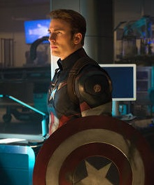

Captain America
Steve Rogers is the moral center and strategic leader of the Avengers.
Character Overview
Steven Grant Rogers debuted in Captain America Comics #1 in 1941. Originally physically weak, he volunteered for the Super Soldier experiment, transforming him into the peak of human physical potential.
After being frozen during World War II, he was revived decades later to join the Avengers and defend Earth from global threats.
Powers and Abilities
- Enhanced strength, speed, and endurance
- Master tactician and battlefield strategist
- Expert hand-to-hand combatant
- Indestructible vibranium shield